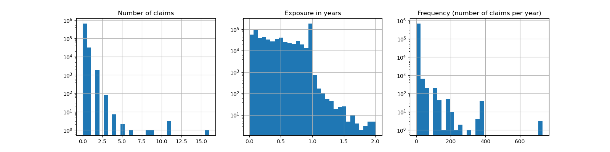
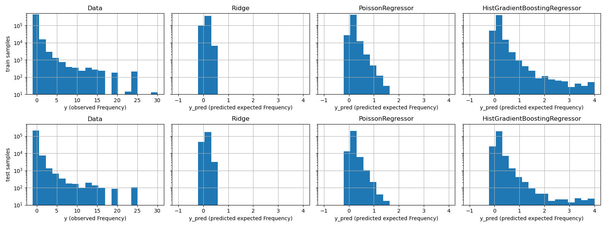
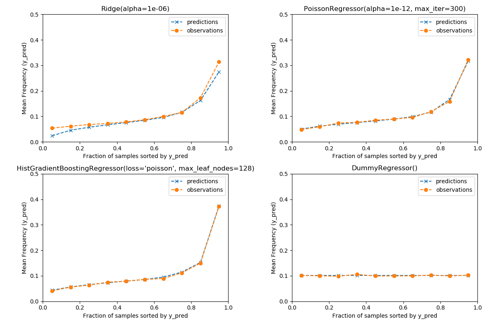

Note
Click here to download the full example code or to run this example in your browser via Binder
Poisson regression and non-normal loss¶
This example illustrates the use of log-linear Poisson regression on the French Motor Third-Party Liability Claims dataset from 1 and compares it with models learned with least squared error. In this dataset, each sample corresponds to an insurance policy, i.e. a contract within an insurance company and an individual (policiholder). Available features include driver age, vehicle age, vehicle power, etc.
A few definitions: a claim is the request made by a policyholder to the insurer to compensate for a loss covered by the insurance. The exposure is the duration of the insurance coverage of a given policy, in years.
Our goal is to predict the expected number of insurance claims (or frequency) following car accidents for a policyholder given the historical data over a population of policyholders.
- 1
A. Noll, R. Salzmann and M.V. Wuthrich, Case Study: French Motor Third-Party Liability Claims (November 8, 2018). doi:10.2139/ssrn.3164764
print(__doc__)
# Authors: Christian Lorentzen <lorentzen.ch@gmail.com>
# Roman Yurchak <rth.yurchak@gmail.com>
# License: BSD 3 clause
import warnings
import numpy as np
import matplotlib.pyplot as plt
import pandas as pd
from sklearn.datasets import fetch_openml
from sklearn.dummy import DummyRegressor
from sklearn.compose import ColumnTransformer
from sklearn.linear_model import Ridge, PoissonRegressor
from sklearn.model_selection import train_test_split
from sklearn.pipeline import make_pipeline
from sklearn.preprocessing import FunctionTransformer, OneHotEncoder
from sklearn.preprocessing import OrdinalEncoder
from sklearn.preprocessing import StandardScaler, KBinsDiscretizer
from sklearn.ensemble import RandomForestRegressor
from sklearn.utils import gen_even_slices
from sklearn.metrics import auc
from sklearn.metrics import mean_squared_error, mean_absolute_error
from sklearn.metrics import mean_poisson_deviance
def load_mtpl2(n_samples=100000):
"""Fetch the French Motor Third-Party Liability Claims dataset.
Parameters
----------
n_samples: int or None, default=100000
Number of samples to select (for faster run time). If None, the full
dataset with 678013 samples is returned.
"""
# freMTPL2freq dataset from https://www.openml.org/d/41214
df = fetch_openml(data_id=41214, as_frame=True)['data']
# unquote string fields
for column_name in df.columns[df.dtypes.values == np.object]:
df[column_name] = df[column_name].str.strip("'")
if n_samples is not None:
return df.iloc[:n_samples]
return df
Let’s load the motor claim dataset. We ignore the severity data for this study for the sake of simplicitly.
We also subsample the data for the sake of computational cost and running time. Using the full dataset would lead to similar conclusions.
df = load_mtpl2(n_samples=300000)
# Correct for unreasonable observations (that might be data error)
df["Exposure"] = df["Exposure"].clip(upper=1)
Out:
/home/circleci/project/sklearn/datasets/_openml.py:754: UserWarning: Version 1 of dataset freMTPL2freq is inactive, meaning that issues have been found in the dataset. Try using a newer version from this URL: https://www.openml.org/data/v1/download/20649148/freMTPL2freq.arff
warn("Version {} of dataset {} is inactive, meaning that issues have "
The remaining columns can be used to predict the frequency of claim events. Those columns are very heterogeneous with a mix of categorical and numeric variables with different scales, possibly very unevenly distributed.
In order to fit linear models with those predictors it is therefore necessary to perform standard feature transformations as follows:
log_scale_transformer = make_pipeline(
FunctionTransformer(np.log, validate=False),
StandardScaler()
)
linear_model_preprocessor = ColumnTransformer(
[
("passthrough_numeric", "passthrough",
["BonusMalus"]),
("binned_numeric", KBinsDiscretizer(n_bins=10),
["VehAge", "DrivAge"]),
("log_scaled_numeric", log_scale_transformer,
["Density"]),
("onehot_categorical", OneHotEncoder(),
["VehBrand", "VehPower", "VehGas", "Region", "Area"]),
],
remainder="drop",
)
The number of claims (ClaimNb) is a positive integer that can be modeled
as a Poisson distribution. It is then assumed to be the number of discrete
events occurring with a constant rate in a given time interval
(Exposure, in units of years). Here we model the frequency
y = ClaimNb / Exposure, which is still a (scaled) Poisson distribution,
and use Exposure as sample_weight.
df["Frequency"] = df["ClaimNb"] / df["Exposure"]
print(
pd.cut(df["Frequency"], [-1e-6, 1e-6, 1, 2, 3, 4, 5]).value_counts()
)
print("Average Frequency = {}"
.format(np.average(df["Frequency"], weights=df["Exposure"])))
print("Percentage of zero claims = {0:%}"
.format(df.loc[df["ClaimNb"] == 0, "Exposure"].sum() /
df["Exposure"].sum()))
Out:
(-1e-06, 1e-06] 276978
(1e-06, 1.0] 7627
(1.0, 2.0] 6432
(2.0, 3.0] 2470
(3.0, 4.0] 1385
(4.0, 5.0] 895
Name: Frequency, dtype: int64
Average Frequency = 0.1331822876791511
Percentage of zero claims = 91.977653%
It is worth noting that 92 % of policyholders have zero claims, and if we were to convert this problem into a binary classification task, it would be significantly imbalanced.
To evaluate the pertinence of the used metrics, we will consider as a baseline a “dummy” estimator that constantly predicts the mean frequency of the training sample.
df_train, df_test = train_test_split(df, random_state=0)
dummy = make_pipeline(
linear_model_preprocessor,
DummyRegressor(strategy='mean')
)
dummy.fit(df_train, df_train["Frequency"],
dummyregressor__sample_weight=df_train["Exposure"])
def score_estimator(estimator, df_test):
"""Score an estimator on the test set."""
y_pred = estimator.predict(df_test)
print("MSE: %.3f" %
mean_squared_error(df_test["Frequency"], y_pred,
df_test["Exposure"]))
print("MAE: %.3f" %
mean_absolute_error(df_test["Frequency"], y_pred,
df_test["Exposure"]))
# ignore non-positive predictions, as they are invalid for
# the Poisson deviance
mask = y_pred > 0
if (~mask).any():
warnings.warn("Estimator yields non-positive predictions for {} "
"samples out of {}. These will be ignored while "
"computing the Poisson deviance"
.format((~mask).sum(), mask.shape[0]))
print("mean Poisson deviance: %.3f" %
mean_poisson_deviance(df_test["Frequency"][mask],
y_pred[mask],
df_test["Exposure"][mask]))
print("Constant mean frequency evaluation:")
score_estimator(dummy, df_test)
Out:
Constant mean frequency evaluation:
/home/circleci/project/sklearn/utils/validation.py:68: FutureWarning: Pass sample_weight=112692 1.000000
19498 0.150000
31689 0.008197
231780 1.000000
4298 0.210000
...
206596 0.280000
118186 0.050000
173973 0.240000
220856 1.000000
90128 0.540000
Name: Exposure, Length: 75000, dtype: float64 as keyword args. From version 0.25 passing these as positional arguments will result in an error
warnings.warn("Pass {} as keyword args. From version 0.25 "
MSE: 0.792
/home/circleci/project/sklearn/utils/validation.py:68: FutureWarning: Pass sample_weight=112692 1.000000
19498 0.150000
31689 0.008197
231780 1.000000
4298 0.210000
...
206596 0.280000
118186 0.050000
173973 0.240000
220856 1.000000
90128 0.540000
Name: Exposure, Length: 75000, dtype: float64 as keyword args. From version 0.25 passing these as positional arguments will result in an error
warnings.warn("Pass {} as keyword args. From version 0.25 "
MAE: 0.245
/home/circleci/project/sklearn/utils/validation.py:68: FutureWarning: Pass sample_weight=112692 1.000000
19498 0.150000
31689 0.008197
231780 1.000000
4298 0.210000
...
206596 0.280000
118186 0.050000
173973 0.240000
220856 1.000000
90128 0.540000
Name: Exposure, Length: 75000, dtype: float64 as keyword args. From version 0.25 passing these as positional arguments will result in an error
warnings.warn("Pass {} as keyword args. From version 0.25 "
mean Poisson deviance: 0.767
We start by modeling the target variable with the least squares linear regression model,
ridge = make_pipeline(linear_model_preprocessor, Ridge(alpha=1.0))
ridge.fit(df_train, df_train["Frequency"],
ridge__sample_weight=df_train["Exposure"])
Out:
Pipeline(steps=[('columntransformer',
ColumnTransformer(transformers=[('passthrough_numeric',
'passthrough',
['BonusMalus']),
('binned_numeric',
KBinsDiscretizer(n_bins=10),
['VehAge', 'DrivAge']),
('log_scaled_numeric',
Pipeline(steps=[('functiontransformer',
FunctionTransformer(func=<ufunc 'log'>)),
('standardscaler',
StandardScaler())]),
['Density']),
('onehot_categorical',
OneHotEncoder(),
['VehBrand', 'VehPower',
'VehGas', 'Region',
'Area'])])),
('ridge', Ridge())])
The Poisson deviance cannot be computed on non-positive values predicted by
the model. For models that do return a few non-positive predictions
(e.g. linear_model.Ridge) we ignore the corresponding samples,
meaning that the obtained Poisson deviance is approximate. An alternative
approach could be to use compose.TransformedTargetRegressor
meta-estimator to map y_pred to a strictly positive domain.
print("Ridge evaluation:")
score_estimator(ridge, df_test)
Out:
Ridge evaluation:
/home/circleci/project/sklearn/utils/validation.py:68: FutureWarning: Pass sample_weight=112692 1.000000
19498 0.150000
31689 0.008197
231780 1.000000
4298 0.210000
...
206596 0.280000
118186 0.050000
173973 0.240000
220856 1.000000
90128 0.540000
Name: Exposure, Length: 75000, dtype: float64 as keyword args. From version 0.25 passing these as positional arguments will result in an error
warnings.warn("Pass {} as keyword args. From version 0.25 "
MSE: 0.779
/home/circleci/project/sklearn/utils/validation.py:68: FutureWarning: Pass sample_weight=112692 1.000000
19498 0.150000
31689 0.008197
231780 1.000000
4298 0.210000
...
206596 0.280000
118186 0.050000
173973 0.240000
220856 1.000000
90128 0.540000
Name: Exposure, Length: 75000, dtype: float64 as keyword args. From version 0.25 passing these as positional arguments will result in an error
warnings.warn("Pass {} as keyword args. From version 0.25 "
MAE: 0.221
/home/circleci/project/examples/linear_model/plot_poisson_regression_non_normal_loss.py:171: UserWarning: Estimator yields non-positive predictions for 2023 samples out of 75000. These will be ignored while computing the Poisson deviance
warnings.warn("Estimator yields non-positive predictions for {} "
/home/circleci/project/sklearn/utils/validation.py:68: FutureWarning: Pass sample_weight=112692 1.000000
19498 0.150000
31689 0.008197
231780 1.000000
4298 0.210000
...
206596 0.280000
118186 0.050000
173973 0.240000
220856 1.000000
90128 0.540000
Name: Exposure, Length: 72977, dtype: float64 as keyword args. From version 0.25 passing these as positional arguments will result in an error
warnings.warn("Pass {} as keyword args. From version 0.25 "
mean Poisson deviance: 0.729
Next we fit the Poisson regressor on the target variable. We set the
regularization strength alpha to 1 over number of samples in oder to
mimic the Ridge regressor whose L2 penalty term scales differently with the
number of samples.
poisson = make_pipeline(
linear_model_preprocessor,
PoissonRegressor(alpha=1/df_train.shape[0], max_iter=1000)
)
poisson.fit(df_train, df_train["Frequency"],
poissonregressor__sample_weight=df_train["Exposure"])
print("PoissonRegressor evaluation:")
score_estimator(poisson, df_test)
Out:
PoissonRegressor evaluation:
/home/circleci/project/sklearn/utils/validation.py:68: FutureWarning: Pass sample_weight=112692 1.000000
19498 0.150000
31689 0.008197
231780 1.000000
4298 0.210000
...
206596 0.280000
118186 0.050000
173973 0.240000
220856 1.000000
90128 0.540000
Name: Exposure, Length: 75000, dtype: float64 as keyword args. From version 0.25 passing these as positional arguments will result in an error
warnings.warn("Pass {} as keyword args. From version 0.25 "
MSE: 0.774
/home/circleci/project/sklearn/utils/validation.py:68: FutureWarning: Pass sample_weight=112692 1.000000
19498 0.150000
31689 0.008197
231780 1.000000
4298 0.210000
...
206596 0.280000
118186 0.050000
173973 0.240000
220856 1.000000
90128 0.540000
Name: Exposure, Length: 75000, dtype: float64 as keyword args. From version 0.25 passing these as positional arguments will result in an error
warnings.warn("Pass {} as keyword args. From version 0.25 "
MAE: 0.236
/home/circleci/project/sklearn/utils/validation.py:68: FutureWarning: Pass sample_weight=112692 1.000000
19498 0.150000
31689 0.008197
231780 1.000000
4298 0.210000
...
206596 0.280000
118186 0.050000
173973 0.240000
220856 1.000000
90128 0.540000
Name: Exposure, Length: 75000, dtype: float64 as keyword args. From version 0.25 passing these as positional arguments will result in an error
warnings.warn("Pass {} as keyword args. From version 0.25 "
mean Poisson deviance: 0.698
Finally, we will consider a non-linear model, namely a random forest. Random
forests do not require the categorical data to be one-hot encoded: instead,
we can encode each category label with an arbitrary integer using
preprocessing.OrdinalEncoder. With this encoding, the forest will
treat the categorical features as ordered features, which might not be always
a desired behavior. However this effect is limited for deep enough trees
which are able to recover the categorical nature of the features. The main
advantage of the preprocessing.OrdinalEncoder over the
preprocessing.OneHotEncoder is that it will make training faster.
rf_preprocessor = ColumnTransformer(
[
("categorical", OrdinalEncoder(),
["VehBrand", "VehPower", "VehGas", "Region", "Area"]),
("numeric", "passthrough",
["VehAge", "DrivAge", "BonusMalus", "Density"]),
],
remainder="drop",
)
rf = make_pipeline(
rf_preprocessor,
RandomForestRegressor(min_weight_fraction_leaf=0.01, n_jobs=2)
)
rf.fit(df_train, df_train["Frequency"].values,
randomforestregressor__sample_weight=df_train["Exposure"].values)
print("RandomForestRegressor evaluation:")
score_estimator(rf, df_test)
Out:
RandomForestRegressor evaluation:
/home/circleci/project/sklearn/utils/validation.py:68: FutureWarning: Pass sample_weight=112692 1.000000
19498 0.150000
31689 0.008197
231780 1.000000
4298 0.210000
...
206596 0.280000
118186 0.050000
173973 0.240000
220856 1.000000
90128 0.540000
Name: Exposure, Length: 75000, dtype: float64 as keyword args. From version 0.25 passing these as positional arguments will result in an error
warnings.warn("Pass {} as keyword args. From version 0.25 "
MSE: 0.772
/home/circleci/project/sklearn/utils/validation.py:68: FutureWarning: Pass sample_weight=112692 1.000000
19498 0.150000
31689 0.008197
231780 1.000000
4298 0.210000
...
206596 0.280000
118186 0.050000
173973 0.240000
220856 1.000000
90128 0.540000
Name: Exposure, Length: 75000, dtype: float64 as keyword args. From version 0.25 passing these as positional arguments will result in an error
warnings.warn("Pass {} as keyword args. From version 0.25 "
MAE: 0.234
/home/circleci/project/sklearn/utils/validation.py:68: FutureWarning: Pass sample_weight=112692 1.000000
19498 0.150000
31689 0.008197
231780 1.000000
4298 0.210000
...
206596 0.280000
118186 0.050000
173973 0.240000
220856 1.000000
90128 0.540000
Name: Exposure, Length: 75000, dtype: float64 as keyword args. From version 0.25 passing these as positional arguments will result in an error
warnings.warn("Pass {} as keyword args. From version 0.25 "
mean Poisson deviance: 0.689
Like the Ridge regression above, the random forest model minimizes the conditional squared error, too. However, because of a higher predictive power, it also results in a smaller Poisson deviance than the Poisson regression model.
Evaluating models with a single train / test split is prone to random fluctuations. If computing resources allow, it should be verified that cross-validated performance metrics would lead to similar conclusions.
The qualitative difference between these models can also be visualized by comparing the histogram of observed target values with that of predicted values:
fig, axes = plt.subplots(2, 4, figsize=(16, 6), sharey=True)
fig.subplots_adjust(bottom=0.2)
n_bins = 20
for row_idx, label, df in zip(range(2),
["train", "test"],
[df_train, df_test]):
df["Frequency"].hist(bins=np.linspace(-1, 30, n_bins),
ax=axes[row_idx, 0])
axes[row_idx, 0].set_title("Data")
axes[row_idx, 0].set_yscale('log')
axes[row_idx, 0].set_xlabel("y (observed Frequency)")
axes[row_idx, 0].set_ylim([1e1, 5e5])
axes[row_idx, 0].set_ylabel(label + " samples")
for idx, model in enumerate([ridge, poisson, rf]):
y_pred = model.predict(df)
pd.Series(y_pred).hist(bins=np.linspace(-1, 4, n_bins),
ax=axes[row_idx, idx+1])
axes[row_idx, idx + 1].set(
title=model[-1].__class__.__name__,
yscale='log',
xlabel="y_pred (predicted expected Frequency)"
)
plt.tight_layout()

The experimental data presents a long tail distribution for y. In all
models we predict a mean expected value, so we will have necessarily fewer
extreme values. Additionally, the normal distribution used in Ridge and
RandomForestRegressor has a constant variance, while for the Poisson
distribution used in PoissonRegressor, the variance is proportional to
the mean predicted value.
Thus, among the considered estimators, PoissonRegressor is better suited
for modeling the long tail distribution of the data as compared to the
Ridge and RandomForestRegressor estimators.
To ensure that estimators yield reasonable predictions for different
policyholder types, we can bin test samples according to y_pred returned
by each model. Then for each bin, we compare the mean predicted y_pred,
with the mean observed target:
def _mean_frequency_by_risk_group(y_true, y_pred, sample_weight=None,
n_bins=100):
"""Compare predictions and observations for bins ordered by y_pred.
We order the samples by ``y_pred`` and split it in bins.
In each bin the observed mean is compared with the predicted mean.
Parameters
----------
y_true: array-like of shape (n_samples,)
Ground truth (correct) target values.
y_pred: array-like of shape (n_samples,)
Estimated target values.
sample_weight : array-like of shape (n_samples,)
Sample weights.
n_bins: int
Number of bins to use.
Returns
-------
bin_centers: ndarray of shape (n_bins,)
bin centers
y_true_bin: ndarray of shape (n_bins,)
average y_pred for each bin
y_pred_bin: ndarray of shape (n_bins,)
average y_pred for each bin
"""
idx_sort = np.argsort(y_pred)
bin_centers = np.arange(0, 1, 1/n_bins) + 0.5/n_bins
y_pred_bin = np.zeros(n_bins)
y_true_bin = np.zeros(n_bins)
for n, sl in enumerate(gen_even_slices(len(y_true), n_bins)):
weights = sample_weight[idx_sort][sl]
y_pred_bin[n] = np.average(
y_pred[idx_sort][sl], weights=weights
)
y_true_bin[n] = np.average(
y_true[idx_sort][sl],
weights=weights
)
return bin_centers, y_true_bin, y_pred_bin
fig, ax = plt.subplots(nrows=1, ncols=3, figsize=(12, 3.5))
plt.subplots_adjust(wspace=0.3)
for axi, model in zip(ax, [ridge, poisson, rf]):
y_pred = model.predict(df_test)
q, y_true_seg, y_pred_seg = _mean_frequency_by_risk_group(
df_test["Frequency"].values,
y_pred,
sample_weight=df_test["Exposure"].values,
n_bins=10)
axi.plot(q, y_pred_seg, marker='o', linestyle="-", label="predictions")
axi.plot(q, y_true_seg, marker='x', linestyle="--", label="observations")
axi.set_xlim(0, 1.0)
axi.set_ylim(0, 0.6)
axi.set(
title=model[-1].__class__.__name__,
xlabel='Fraction of samples sorted by y_pred',
ylabel='Mean Frequency (y_pred)'
)
axi.legend()
plt.tight_layout()

The Ridge regression model can predict very low expected frequencies
that do not match the data. It can therefore severly under-estimate the risk
for some policyholders.
PoissonRegressor and RandomForestRegressor show better consistency
between predicted and observed targets, especially for low predicted target
values.
However, for some business applications, we are not necessarily interested in the ability of the model to predict the expected frequency value, but instead to predict which policyholder groups are the riskiest and which are the safest. In this case, the model evaluation would cast the problem as a ranking problem rather than a regression problem.
To compare the 3 models within this perspective, one can plot the fraction of the number of claims vs the fraction of exposure for test samples ordered by the model predictions, from safest to riskiest according to each model:
def _cumulated_claims(y_true, y_pred, exposure):
idx_sort = np.argsort(y_pred) # from safest to riskiest
sorted_exposure = exposure[idx_sort]
sorted_frequencies = y_true[idx_sort]
cumulated_exposure = np.cumsum(sorted_exposure)
cumulated_exposure /= cumulated_exposure[-1]
cumulated_claims = np.cumsum(sorted_exposure * sorted_frequencies)
cumulated_claims /= cumulated_claims[-1]
return cumulated_exposure, cumulated_claims
fig, ax = plt.subplots(figsize=(8, 8))
for model in [ridge, poisson, rf]:
y_pred = model.predict(df_test)
cum_exposure, cum_claims = _cumulated_claims(
df_test["Frequency"].values,
y_pred,
df_test["Exposure"].values)
area = auc(cum_exposure, cum_claims)
label = "{} (area under curve: {:.3f})".format(
model[-1].__class__.__name__, area)
ax.plot(cum_exposure, cum_claims, linestyle="-", label=label)
# Oracle model: y_pred == y_test
cum_exposure, cum_claims = _cumulated_claims(
df_test["Frequency"].values,
df_test["Frequency"].values,
df_test["Exposure"].values)
area = auc(cum_exposure, cum_claims)
label = "Oracle (area under curve: {:.3f})".format(area)
ax.plot(cum_exposure, cum_claims, linestyle="-.", color="gray", label=label)
# Random Baseline
ax.plot([0, 1], [0, 1], linestyle="--", color="black",
label="Random baseline")
ax.set(
title="Cumulated number of claims by model",
xlabel='Fraction of exposure (from safest to riskiest)',
ylabel='Fraction of number of claims'
)
ax.legend(loc="upper left")

Out:
<matplotlib.legend.Legend object at 0x7f3a4b118a90>
This plot reveals that the random forest model is slightly better at ranking policyholders by risk profiles even if the absolute value of the predicted expected frequencies are less well calibrated than for the linear Poisson model.
All three models are significantly better than chance but also very far from making perfect predictions.
This last point is expected due to the nature of the problem: the occurrence of accidents is mostly dominated by circumstantial causes that are not captured in the columns of the dataset or that are indeed random.
plt.show()
Total running time of the script: ( 0 minutes 59.666 seconds)